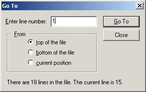

| Search -> Go To... | Previous Top Next |

Use the "From" option to indicate from which position you want to start. For example, if your program has 123 lines, if you indicate "3" in "Enter line number" and "From bottom of file", you will go to line 123.